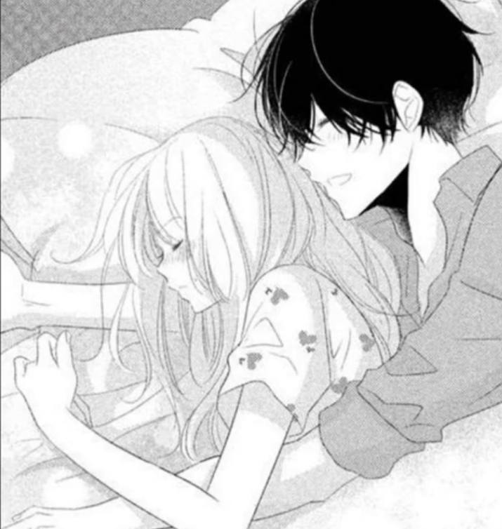

Мужской
Женский
Пока не определился
Светлые
Тёмные
Я рыжик
Да
Нет
Да, одного
Да, более одного
Я не имею детей (предпочитаю своих ровесников)
Да, конечно, я самый крутой
Нет, но я не считаю себя плохим человеком
Я чмо
993
ЭТОТ ЁБАННЫЙ ДОЖДЬ НАГОНЯЕТ ТОСКИ, 1000-7, Я УМЕР, ПРОСТИ
995
Да, я очень хорошо готовлю
Я неплохо готовлю
Не могу даже яйца пожарить
Не могу даже яйца пожарить, не спалив всю кухню до тла
ДА
Я нормально к ним отношусь, но сходиться бы не стал
У меня ещё не было девушки
Крутая, исполнитель тоже нравится
Хорошая, но его песни не слушаю
Стрёмная
Меньше 18
18-22
22-30
30+
менее 165 сантиментов
165-175
175-185
185+
Да, очень
Скорее да, чем нет
Нет
Скорее нет, чем да

ахахпх, да
нет, анекдот тупой
ну меня улыбнуло
Ни одна не понравилась
Да, как минимум писать
Хочу видеться почти каждый день, первого пункта недостаточно
Нет
Да, я очень тактильный
Плюс-минус тактильный
Нет
Да
Нет
Да
Нет, но могу постараться
Я слишком застенчив для этого, проще забыть человека
Да, моя госпожа
Да
Нет